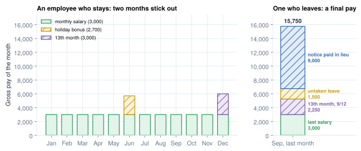
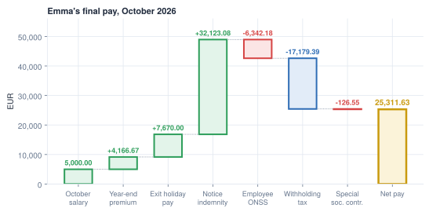

Irregular pay, corrections and leavers
Bonuses, holiday pay, mistakes, and the last payslip
- Recognise the patterns behind irregular pay: 13th months and bonuses, holiday pay, accruals and provisions
- Choose a correction method, and know why some errors cannot be recovered from the employee
- Apply a garnishment ceiling on net pay
- Tell notice, payment in lieu of notice, severance and end-of-service gratuity apart
- Assemble a leaver's final pay from its components
On 31 October 2026 MyVidangeCompany dismisses Emma after seven years, with immediate effect and an indemnity in lieu of notice. Her last pay is the biggest of her career: 48,959.75 € gross, five different components, three different tax rates, and 25,311.63 € net. None of it follows the monthly formula of Chapters 2 to 4. This chapter covers the pay that does not come every month: bonuses, holiday pay, corrections and leavers.
What irregular pay is
Irregular pay (non-recurring pay, one-off payments; tax laws often say non-periodic income) is any pay that does not come with every regular payslip: a 13th month, a bonus, a holiday bonus, a correction of an earlier month. A leaver's final pay (final settlement, full and final settlement) is the last pay of a contract. It collects several irregular items at once: the last salary, the bonus and leave earned but not yet paid, and money for the end of the contract itself.
Three things follow from that definition:
- It does not fit the monthly formula. Annualise a double month and the employee looks like a high earner for a year. Irregular pay usually gets its own tax method (Chapter 4) and often its own payslip.
- It is earned before it is paid. A 13th month is earned month by month; a leaver is owed the share earned so far.
- A final pay is a list of items. The items are the same everywhere; the law of each country says which are due (see Leavers below).

13th months and bonuses
Many countries add a payment once or twice a year: a 13th month, a Christmas bonus, a religious-holiday allowance. They share three design questions:
| Question | Options |
|---|---|
| When is it paid? | once a year; in two halves; pro rata at exit |
| How is it accrued? | not at all; or a monthly provision, so the cost lands in the month it was earned |
| How is it taxed? | its own method, not the monthly formula (Chapter 4) |
In Odoo, such a payment is usually a separate payslip on its own structure, with its own rules and tax method, rather than an extra line on the monthly payslip.
Around the world
- Mexico: the Christmas bonus has its own structure, an exempt part and monthly provisions.
- Philippines: a 13th-month provision every month.
- Switzerland: 13th and 14th month, with provisions.
- Luxembourg: separate structures with a tax rule for non-periodic income.
- Indonesia: the religious-holiday allowance, entered as a payslip input.
Case study: Mélanie's year-end premium
MyVidangeCompany's sector agreement grants a year-end premium of one monthly salary in December. It carries ordinary contributions, a flat tax rate (Chapter 4), and pushes up the quarterly special contribution (Chapter 3).
Worked example: Mélanie's December 2026
| Line | Amount (€) |
|---|---|
| SALARY December salary | 4,000.00 |
| Year-end premium | 4,000.00 |
| ONSS Employee contributions 13.07 % on both | −1,045.60 |
| P.P Withholding on the salary (November formula) | −818.23 |
| Withholding on the premium: 3,477.20 × 46.44 % | −1,614.81 |
| M.ONSS Special contribution: quarter's 159.53 − 72.48 already withheld | −87.05 |
| NET Net pay December | 4,434.31 |
| Employer contributions 25.12 % | 2,009.60 |
| Employer cost | 10,009.60 |
The premium lifts the quarterly base to 16,000.00 €; December withholds the quarter's 159.53 € minus what October and November took.9 The premium's rules come from the sector agreement, not the law (UNVERIFIED, secondary source).5
Holiday pay
Paid leave is the employee's right to a number of days off a year, set by law or contract, without losing pay. Holiday pay is the money tied to those days. It comes in up to three forms, and each one lands on a different payslip:
In a few systems a fund pays the holiday money instead of the employer (Belgian blue-collar workers); then it never appears on the payslip.
Case study: Mélanie's holiday bonus
Belgian white-collar employees get a holiday bonus of 92 % of a monthly salary, earned in the previous year. Instead of ordinary contributions, a special 13.07 % deduction applies to part of it, and it is taxed at a flat rate.2,4
Worked example: Mélanie's holiday bonus, June 2026
| Line | Amount (€) |
|---|---|
| Holiday bonus 92 % × 4,000.00 | 3,680.00 |
| Special 13.07 % on 85 % of the salary (3,400.00) | −444.38 |
| Taxable | 3,235.62 |
| Withholding, holiday-pay rate 42.39 % | −1,371.58 |
| Net holiday bonus | 1,864.04 |
Odoo's June payslip gives the same special deduction, withholding and net.1
In Belgium
Three variants: simple (the salary during the days off), double (the 92 % bonus) and exit holiday pay, which settles both when a contract ends.3 The 85 % base is practice, not a legal figure (UNVERIFIED).
Corrections
A correction fixes a payslip that was computed with wrong or late information: an unpaid day reported after the payroll ran, a raise signed late, a wrong rate. It happens whenever the error is found, often weeks later. What it means for the payslip depends on how far the payslip has already travelled: before the bank transfer nothing has left the company; after it, the money and the declarations have, and only the difference can still be settled.
The further the payslip went (paid, declared, a closed year), the heavier the fix. The law adds limits: some deductions cannot be recovered from the employee later (in Belgium, a contribution not withheld in time),6 a closed tax year needs a special form, and arrears have their own tax rule.7
Worked example: Jurgen's forgotten unpaid day
Jurgen's October unpaid day is entered after October was paid. MyVidangeCompany deducts the 106.15 € (Chapter 5's daily rate) on the November payslip, and November's reduction, withholding and special contribution follow the lower gross. October's line in the quarterly return is corrected when it is filed.
When deductions exceed earnings, the net goes negative and a bank cannot pay it. The usual policy is to pay zero and carry the rest forward; the Belgian structure has a NET_TO_RECOVER line for that.
Around the world
- India, Turkey, Poland: the cumulative method corrects itself next month.
- Egypt, Pakistan: a year-to-date tax adjustment wizard adds a correction line.
- Australia: a pay-event report already sent can be replaced in full.
- Philippines: a year-end annualisation trues up the year.
In Odoo. A validated payslip can be refunded: a negated copy linked to the original. Chapter 15 corrects a payslip after validation.
Garnishment
A court can order the employer to pay part of the salary to a creditor. Almost every country protects a minimum: only the net above legal thresholds can be seized, in slices. In Belgium nothing below 1,419.00 € of net can be seized in 2026, then growing slices; on Mélanie's 2,614.26 €, at most 906.46 €.8,9
In Odoo. A garnishment is a payslip adjustment (hr.salary.attachment); the rule applies the legal ceiling.
Leavers
A leaver is an employee whose contract ends: he resigns, is dismissed, reaches the end of a fixed-term contract, or retires. It happens on a known last day, often after a notice period. For the payroll, the leaver's last pay, the final pay, must settle everything still owed in one go: there is no next month to fix a forgotten item. The items fall into three groups:
Bonus earned so far (9/12 of a 13th month)
Leave not taken
Severance pay or end-of-service gratuity
Exit notice, certificates for the employee
Four terms are often confused:
| Term | What it is | Typical formula |
|---|---|---|
| Notice | a period between announcement and end, worked and paid as usual | length by seniority |
| Payment in lieu of notice | the notice not worked, paid at once | weekly pay × weeks of notice |
| Severance pay | compensation for losing the job, on top of notice | an amount per year of service |
| End-of-service gratuity | earned through the years, paid at any exit | a share of salary per year, accrued monthly |
Around the world
- Saudi Arabia, UAE: end-of-service gratuity, accrued monthly, paid when a departure reason is set.
- India: a monthly gratuity line; "full-and-final" payslips on departure.
- Hong Kong: severance reduced by the employer's provident-fund contributions.
- Australia: lump sums with tax-free limits by years of service.
- Turkey: severance pay with a legal ceiling.
Case study: Emma, dismissed with an indemnity in lieu of notice
Emma's notice depends on her seniority: 7 years and 1 month gives 24 weeks.10 MyVidangeCompany pays them as an indemnity, valued on her annual pay, benefits included:
For Emma: (60,000.00 + 5,000.00 + 4,600.00) ÷ 52 × 24 = 32,123.08 €. It carries ordinary contributions11 and is taxed on a separate indemnity scale (38.96 % for Emma).
Common pitfall
Getting the hire date wrong by one month. Counted from 1 November 2019, Emma's 24 weeks become 21: 4,015.39 € less. Check the contract start, earlier contracts with the same employer, and the notice start before computing.
In Belgium
Notice grows with seniority by steps (3 more weeks per started year from 5 years), with a cap for recent contracts. An employee who resigns has a shorter notice. The employer also pays a special contribution of 1 % to 3 % on dismissal indemnities (UNVERIFIED band; the calculator applies 1 %).12
Emma's final pay
Her other items: the October salary, the year-end premium pro rata (10/12), and the exit holiday pay she earned in 2026.

| Component | Pattern | Gross | Employee contributions | Withholding |
|---|---|---|---|---|
| October salary | last salary, monthly formula | 5,000.00 | 653.50 | 1,245.27 |
| Year-end premium 10/12 | pro-rata bonus, flat rate 51.48 % | 4,166.67 | 544.58 | 1,864.65 |
| Exit holiday pay, simple | accrued leave | 3,835.00 | 501.23 | with next row |
| Exit holiday pay, double | accrued holiday bonus, 47.44 % on both | 3,835.00 | 444.38 | 3,190.05 |
| Indemnity, 24 weeks | payment in lieu of notice, 38.96 % | 32,123.08 | 4,198.49 | 10,879.42 |
| Total | 48,959.75 | 6,342.18 | 17,179.39 |
| Final pay | Amount (€) |
|---|---|
| Gross | 48,959.75 |
| Employee contributions | −6,342.18 |
| Withholding | −17,179.39 |
| Special social security contribution (quarter, indemnity left out) | −126.55 |
| Net paid | 25,311.63 |
| Employer contributions 25.12 % on 45,124.75 | 11,335.34 |
| Special contribution on the indemnity 1 % | 321.23 |
| Employer cost | 60,616.32 |
Five components, four tax treatments, two contribution treatments: a final pay is never "one more payslip". Exit holiday pay is 15.34 % of the year's gross, half simple, half double.3
Open questions: Emma's final pay in Odoo
Odoo finds the same 24 weeks and the same premium withholding. Other lines differ; the main ones:1
| Item | Calculator | Odoo | Why |
|---|---|---|---|
| Withholding on the indemnity | 10,879.42 | 8,771.79 | 38.96 % against about 31.3 %: open |
| Exit holiday pay, simple part | 3,835.00 | 3,476.88 | Odoo's base covers January to September only: open |
| Net of the five payslips | 25,311.63 | 27,099.24 |
Chapter 10 shows how such differences are taken to an expert.
In Odoo. Each component is a separate payslip on its own structure (Monthly Pay, 13th Month, Termination Holidays, Termination Fees). The departure dialog computes the notice; the exit payslips join the leaver's last pay run. Chapter 17 follows Emma's departure in Odoo.
In practice
Build a final pay as a checklist before computing: last salary, bonus pro rata, accrued leave, notice or payment in lieu, severance, recoveries (advances, a laptop), documents. Most final-pay errors are a forgotten line, not a wrong rate.
Summary
- Irregular pay (13th months, bonuses, holiday bonuses) usually gets its own structure and its own tax method, and is often accrued monthly with a provision.
- Mélanie's December: 4,000.00 € of premium taxed at a flat 46.44 %, and a quarterly catch-up of 87.05 €; net 4,434.31 €.
- Holiday pay is salary that continues, sometimes plus a bonus; untaken leave is paid at exit. Mélanie nets 1,864.04 € of holiday bonus.
- Correct before payment by recomputing; after, adjust next month or refund and reissue.
- Garnishment is capped on the net: at most 906.46 € of Mélanie's 2,614.26 €.
- Notice, payment in lieu, severance and gratuity are four different things. Emma gets 24 weeks paid in lieu: 32,123.08 €.
- Emma's final pay: 48,959.75 € gross, 25,311.63 € net, 60,616.32 € of employer cost.
-
Payslips computed by Odoo master on the demo database,
research/numbers_be.md, sections 4 (Emma's departure and exit payslips) and 5 (double holiday pay); differences inresearch/odoo_vs_calc.md. ↩↩ -
socialsecurity.be, annual holidays (20 days, double holiday pay 92 %): https://www.socialsecurity.be/citizen/fr/conges-credit-temps-et-interruption-de-carriere/vacances-annuelles. ↩
-
ONSS, holiday pay (exit holiday pay 15.34 %, new employer advance 10 %): https://www.socialsecurity.be/employer/instructions/dmfa/fr/latest/instructions/salary/particularcases/holidaypay.html. ↩↩
-
ONSS, special contribution on double holiday pay, private sector: https://www.socialsecurity.be/employer/instructions/dmfa/fr/latest/instructions/special_contributions/other_specialcontributions/doubleholiday_privatesector.html. ↩
-
Secondary source: ACCG, Tool CP 200 prime de fin d'année 2025: https://www.accg.be/sites/default/files/sectors/cp-200/accg-cp-200-tool-cp-200-prime-de-fin-d-annee-2025.pdf. ↩
-
ONSS, general rule on contribution payment: https://www.socialsecurity.be/employer/instructions/dmfa/fr/latest/instructions/obligations/obligations_nsso/contributionpayment_obligations_periodicity/generalrule.html. ↩
-
SPF Finances, Annex III from 1 January 2026, n° 53–62: https://www.minfin.fgov.be/myminfin-web/pages/public/fisconet/document/536a741e-81d6-4605-ad11-8e07ebc4a440. ↩
-
SPF Emploi, garnishment and assignment of salary (2026 amounts): https://emploi.belgique.be/fr/themes/remuneration/protection-de-la-remuneration/saisie-et-cession-sur-salaires. ↩
-
Independent calculator,
research/numbers_be_calc.md, sections 5 to 7, 10.11 and 10.13. ↩↩ -
Law of 3 July 1978, art. 37/1, 37/2 (version from 1 August 2026), 37/4 and 39 (Justel): https://www.ejustice.just.fgov.be/cgi_loi/article.pl?language=fr&lg_txt=f&type=&sort=&numac_search=1978070303&cn_search=1978070303&caller=&&view_numac=1978070303fr. ↩
-
ONSS, end of the employment contract: https://www.socialsecurity.be/employer/instructions/dmfa/fr/latest/instructions/salary/particularcases/end_of_contract.html. ↩
-
ONSS, special contribution on dismissal indemnities: https://www.socialsecurity.be/employer/instructions/dmfa/fr/latest/instructions/special_contributions/other_specialcontributions/terminationfeecontribution.html. ↩